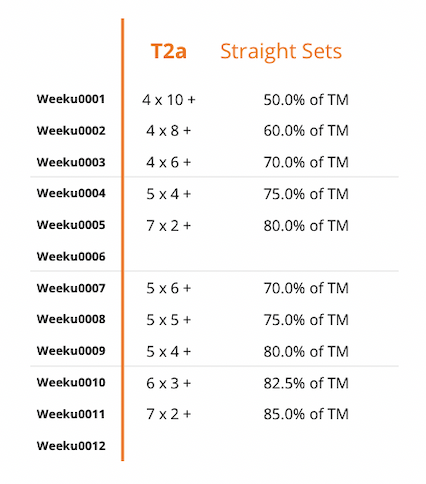

Hi fren
Here is my program that has given gains, strength, and lots of fun. It’s based on a program I used to run by a guy Cody Lefever. It was called Jacked&Tan 2.0. I took the periodization and progression from it.
Movements are grouped into 5 tiers. Each tier has a different approach. Here they are laid out:

Tier 1 – any type of multi-joint movement that can be loaded heavily with a high degree of relative safety (so weird shit you’re out) and ideally utilizes a barbell, but not required to do so. Every training session you work up to a Rep Max (RM) then reduce the weight to a percentage based off a Training Max (2RM) for additional T1 drop sets.
An optional rep out is attached to the last drop set and can be used as a means to gauge progress and determine whether or not the intensity of the drop sets matches the desired outcome. These last set rep outs are the primary means of pushing effort when there’s gas in the tank to do so. Prioritize them in the T1. This is what the + means in the image. The last set is a rep-out set.
An example T1 – Let’s say overhead press week 1. That means I work up to a 10RM, and then I load 70% of a 2RM and do 2 sets of 6, with the 3rd set being a rep-out. It could just be 6 reps or it could be 10 ( if it was 10, I’d have to re-consider my 2RM. You can see how this is both a ton of volume but also enough intensity. By week 5 you will be finding a 2RM. This changes after week 6, at which point you enter block 2. Then your drop sets are based off the RM found that day instead of you estimated 2 rep max.
Tier 2 and 3 – We have two “T2” ranges. This is based on your perception of the movement you’d like to do. Deadlift is better off in T2a, because you know your 2RM, and finding a 15RM (if it was T2b) on deadlift is just inefficient. However, for something like the Arnold press, finding a 15RM can be fun and give you a great pump. Keep these things in mind when choosing your own movements.
So while T2A is based off a known training max (2RM), T2b as well as T3 are based on finding a RM that day, and the doing 3 “MRS sets”.
MRS – Max Rep Sets. Lets say you’re in week 1 doing Arnold Pressing and you find that your 15RM is 35 lb DB (mirin, brah). Your following three sets are MRS/rep-outs. NOT TO FAILURE. Just do as many as you can do without failure. You’ll notice accumulated fatigue makes your sets appear like: 15, 14, 10, 12.. This is fine. It’s still a ton of volume (51 total reps).
Exercise selection:
What Tier a movement ends up in depends on the type of movements.
T1 – Your go-to compounds that you want to increase strength
T2A – Your compound/compound variations that you want to increase volume
T2B – Your assistance excecirese, dumbbell movements, heavy isolations for volume
T3 – Your assistance/isolation/weak-point movements. Great for cable/lever movements. I do a lot of hammer strength lever work in the T3
T1 Straight Sets – This is exlusivle for front or back squat which will be peppered twice throughout your week. Depending on your auto-regulation, you can put these two movements on one of your push/pull days, which I’m about to get into..
Training days – Four training days. Two push, Two pull (PUSH/PULL/PUSH/PULL)
“BRO, WHERE IS MY LEG DAY?”
When I designed this program, I was JUST finishing up a front squat specialization program. My legs were ginormous, and my squat numbers were YUGE for an intermediate. So I looked at the the days as an upper body specialization and said, “I can’t just not squat.. who does that?”
DYELs. That’s who. You must squat twice a week, at the beginning of your session. Pick two days based on the volume of your days. I like to put back squatting on my first push day and front squatting on my second pull day.
"BRO, WHERE IS MY ARM DAY?”
Tris on push day, bis on pull day, you’ll see.
Program for lazy bros who just want to get started
DAY ONE: PUSH A
STRAIGHT SETS - BACK SQUAT
T1 – HORIZONTAL PUSH – INCLINE BENCH
T2B – VERTICAL PUSH – ARNOLD PRESS
T2B/T3 – HORIZONTAL PUSH – HAMMER STRENGTH ISO LATERAL BENCH
TRICEP WORK – 4x10 your choice of movements. This is very personal. You can even pick your own progression.. Just chase that arm pump. For me I do standing tricep extensions with barbell
DAY TWO PULL A
T1 – HORIZONTAL PULL – T-BAR ROW
T2A – GENERAL BACK WORK - STIFF LEGGED DEADLIFT
T2B/T3 – HORIZONTAL PULL – WIDE GRIP CABLE ROW
BICEP WORK again… 4x10 your choice of movements. This is very personal. You can even pick your own progression.. Just chase that arm pump. For me I do zottman curls for that brachialis
DAY THREE PUSH B
T1 – VERTICAL PUSH – OVERHEAD PRESS
T2B – HORIZONTAL PUSH – BENCH PRESS
T2B/T3 – VERTICAL PUSH – BTN PRESS
BI WORK
DAY FOUR PULL B
STRAIGHT SETS - FRONT SQUAT (OLY GRIP)
T1 – VERTICAL PULL – WEIGHTED PULLUPS
T2B- HORIZONTAL PULL – KROC ROWS
T2B/T3 – BTN LAT PULL DOWN
TRI WORK
So there you have it, I highly recommend this approach. You can scrap my movements but keep the tier order.. start with T1, T2a/b, T3, arms/core. Throw squats in twice a week. Any questions DM @ProtoBronze .. read Cody’s Jacked and Tan 2.0 write up on his blog. Thanks